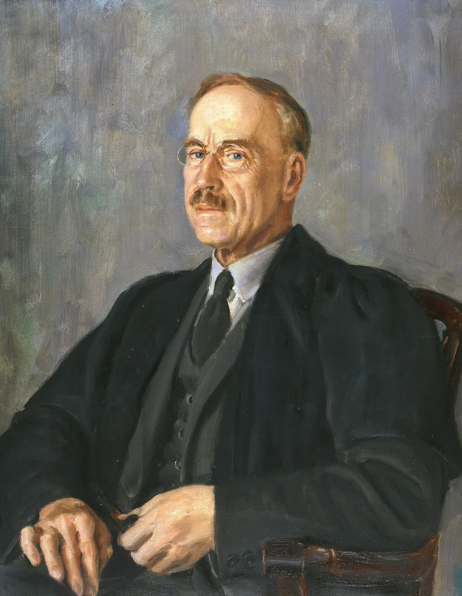
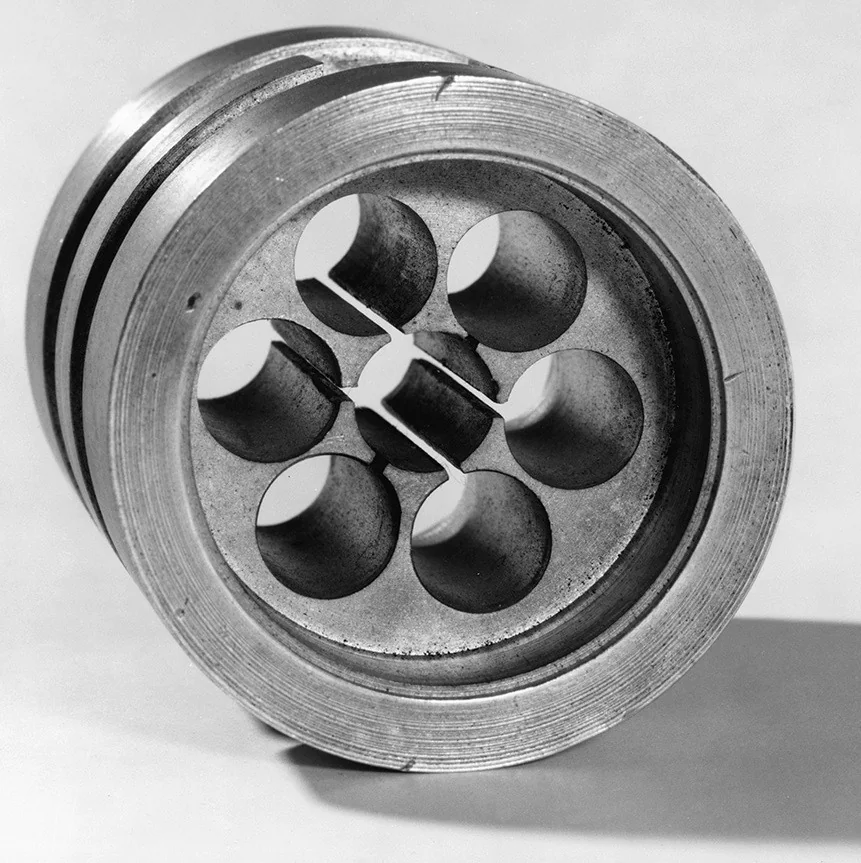
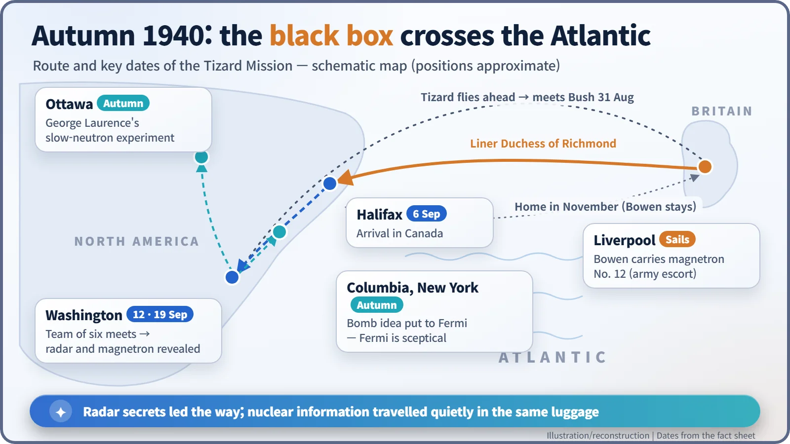
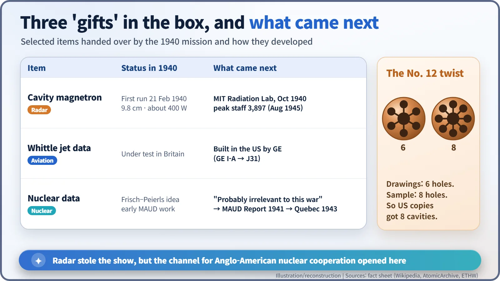

Nuclear History · 083
Secrets in a Black Box — The Tizard Mission and Anglo-American Science (1940)
In 1940 Britain handed its best secrets to a neutral America first, and early uranium research travelled in the same luggage as the radar that stole the show.
In the late summer of 1940, with Britain fighting for its skies, a small British team led by Sir Henry Tizard crossed the Atlantic carrying a deed box of secrets for the still-neutral United States. The star exhibit was the cavity magnetron, the heart of compact microwave radar. Tucked into the same luggage was early British thinking about uranium, and with it the first channel of Anglo-American nuclear cooperation.
A case on a taxi roof
Late summer 1940, Euston Station, London. A young Welsh radar scientist, Edward George "Taffy" Bowen (1911–1991), was unloading a case that had ridden across town strapped to the roof of a taxi when an over-eager porter grabbed it and nearly vanished with it into the crowd. By Bowen's own later account, he had spent the previous night with the case under his hotel bed. Inside was a lump of copper not much bigger than a hand. It was one of the most valuable secrets Britain possessed. [1]
That little scramble is the opening scene of the Tizard Mission. Note the date: although the story of Britain's MAUD Report (1941) is often told first, this episode happened a year earlier, between August and November 1940.
An island with ideas but no spare factories
In the summer of 1940 Britain was fighting the Luftwaffe in its own skies. It had advanced technology, radar above all, but its factories were flat out producing the weapons it needed that very week. There was no slack left to develop and mass-produce new inventions. The United States had factories and money to spare, but it was still neutral, and many in Congress wanted to keep it that way. [1]
Into this gap stepped Sir Henry Tizard (1885–1959), a chemist turned science administrator who had chaired the committee under which British radar was developed in the 1930s. His proposal was bold: show the Americans Britain's secrets first, without haggling over a price, so that American industry could build what Britain could not. Neither Winston Churchill nor the radar pioneer Robert Watson-Watt agreed with this approach at first, but approval was eventually given. [1] [5]

The star of the box: the cavity magnetron
The copper lump Bowen was guarding was a cavity magnetron: a vacuum tube built around a copper block drilled with a ring of round holes, or cavities. Electrons whirl past the openings much as air rushes across the holes of a whistle, and the block "sings" in powerful radio waves. John Randall and Harry Boot first ran one on 21 February 1940 in Mark Oliphant's laboratory at the University of Birmingham. It produced about 400 W at a wavelength of about 9.8 cm, far more than anything previously available at such short wavelengths. Short waves at that power meant radar sets small enough to fit in an aircraft, yet sharp enough to pick out small targets. [3]
There is a neat coincidence here. In the same Oliphant laboratory, only a month later, the refugee physicists Otto Frisch and Rudolf Peierls wrote their memorandum showing that an atomic bomb might be practical. Radar and the bomb idea were born almost side by side, in the same building.

Six people and a deed box
Tizard flew ahead and met Vannevar Bush, chairman of the US National Defense Research Committee (NDRC), on 31 August. The rest of the party sailed from Liverpool on the Canadian Pacific liner Duchess of Richmond and reached Halifax, Canada, on 6 September. Their papers travelled in a small lockable metal deed box of the kind normally used for property deeds. On 12 September the team of six assembled in Washington: John Cockcroft (1897–1967) for science, Bowen for radar, three officers from the army, navy and air force, and a secretary. [1]
On 19 September the British laid out their radar work piece by piece, and then produced the magnetron. The Americans admitted that their own microwave radar research had stalled for lack of transmitter power. Besides the magnetron, the box held more than 20 technologies, including ideas for the proximity fuze and details of Frank Whittle's jet engine. [1]

The uranium story that came along for the ride
The nuclear side was Cockcroft's job. He described the early work of Britain's MAUD Committee and the Frisch–Peierls idea, and the two sides found their research was running roughly in parallel, although the Americans were in much less of a hurry. When the bomb concept was put to Enrico Fermi at Columbia University in New York, he was highly sceptical: his own goal was nuclear power to raise steam. In Ottawa, Cockcroft also visited George Laurence, who was quietly running his own slow-neutron experiment. [1] [2]
The mission's verdict was surprisingly low-key. Slow-neutron research, it reported, was probably irrelevant to the present war, though "nuclear boilers" might have value after it; the delegation arranged some modest funding for the Canadian experiments. It is worth remembering that the final MAUD Report did not yet exist at this point. [1]
What the box left behind
The most dramatic result was in radar. In October 1940 the Radiation Laboratory (the "Rad Lab") was set up at MIT; by August 1945 it employed 3,897 people. James Phinney Baxter III, the official historian of the US wartime research office, later called the magnetron "the most valuable cargo ever brought to our shores." That was the verdict of an American admirer at the time; it would be going too far to say that radar alone decided the war. A quirk survived too: when Bell Labs X-rayed the magnetron sample, labelled No. 12, they found eight cavities instead of the six on the drawings, which is why early American magnetrons had eight. [4] [1]

For nuclear energy, the legacy was a channel. Along the route opened in 1940, the MAUD Report reached the United States in 1941, and in 1943 the Quebec Agreement merged the two countries' bomb projects. The first link in Anglo-American nuclear cooperation was forged not by a bomb, but by a gamble of trust over radar secrets. [2]